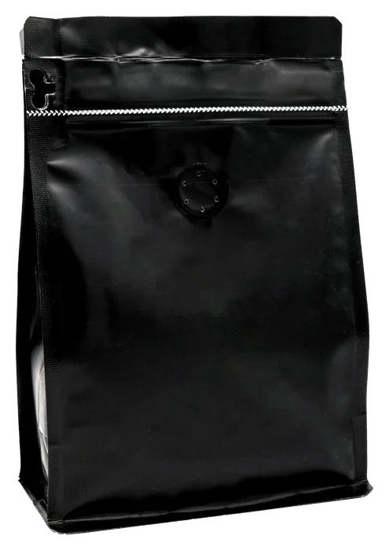
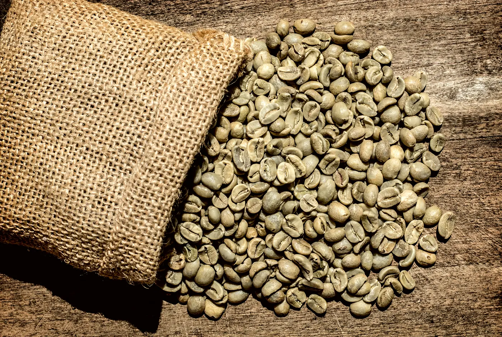
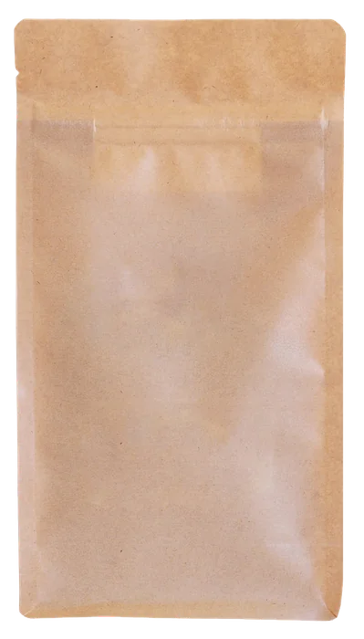
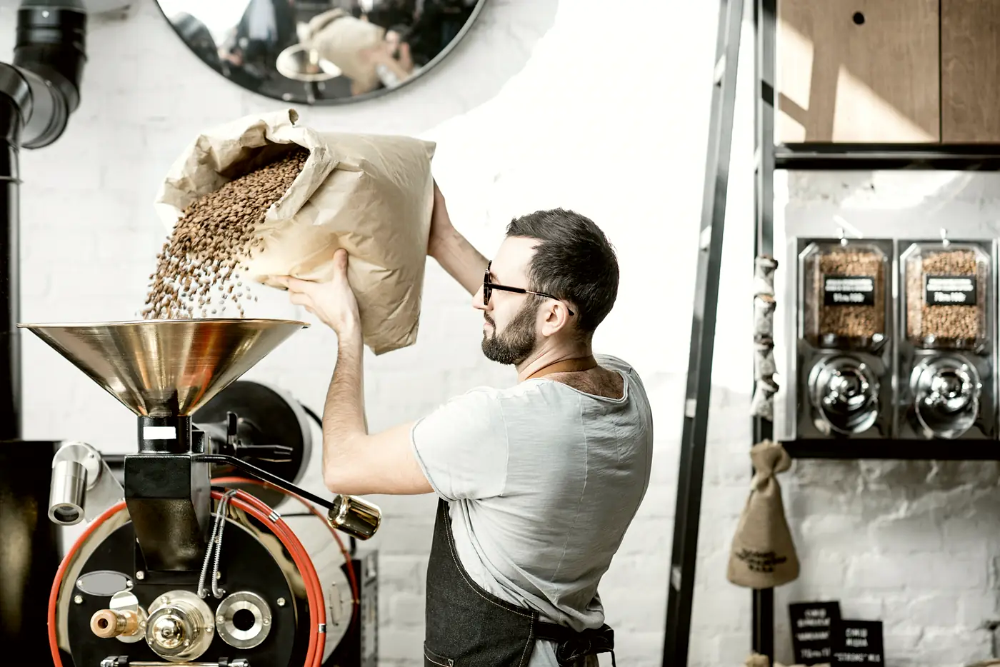

Roasted in Singapore · Sent the morning after
Roasted Thursday. At your door by Saturday.
Single-origin coffee, roasted in small batches on a fifteen-kilo drum, bagged the same afternoon and sent straight to you. No shelf, no warehouse, no best-before. Just a roast date.
- Roast day Thursday
- Order by Wed 18:00
- Free delivery over SGD 40

The roast, minute by minute
Every bag is dropped somewhere on this line. You choose where.
- Drop
- 10:15213 °C
- Development
- 1:3515% of the roast, after first crack
- Weight lost
- 14%water and chaff, gone as steam
- In the cup
- Sugars caramelised, acidity rounded into red fruit, more body.
ListenFirst crack is the sound the beans make when the steam inside them breaks the cell walls, a snap like popcorn about eight and a half minutes in. It is the one moment every roaster listens for, because everything after it is a decision, and everything before it is chemistry. Hover the line to read the roast at any second.

This week’s roast
Six bags, one roast date, no old stock.
Every bag below is roasted this Thursday and reaches you Saturday. Each carries its roast date on the label, the level we drop it at, and what it tastes like when we cup it.
Your roast level is medium
Freshness, as a schedule
We print the roast date. You choose the day.
Coffee is a fresh product with a short window and a long shelf life, which is why most of it is sold stale. We roast once a week, to order, and the bag leaves the roastery within a day. The week looks like this, every week.
—until the cutoff for Thursday’s roast
Resting
Fresh is not the same as freshest. A bag needs a few days to let go of its CO₂ before the water can get in. We mark the window on every bag.
- Day 0–4Too freshThe gas fights the water. Bright, thin, hard to dial in.
- Day 5–14The windowEverything we tasted at the cupping table, in your cup.
- Day 15–30Still goodGrind a touch finer. Espresso often peaks here.
From the doorstep
What it tastes like at home.
Subscription
Stop thinking about coffee.
Twelve per cent off every bag, delivery free, the roast date always this week’s. Pause or stop whenever; there is nothing to cancel because you never paid ahead.

Whatever we are proudest of that week, roasted medium to match the level you chose above.

The roastery
A fifteen-kilo drum in a unit off Tai Seng, and one roast day.
We roast on Thursdays because Thursday lets a bag rest over the weekend and land in the window by the following week. Green coffee comes in sixty-kilo sacks from importers we have visited, is cupped on arrival, and is profiled on a two-kilo sample roaster before the first production batch. Every batch is logged: charge weight, first crack, drop. The log is below, and it is real.
Last roast day
- BagDate · chargeFirst crackDrop
Your level is medium. The line above shows where that drops.